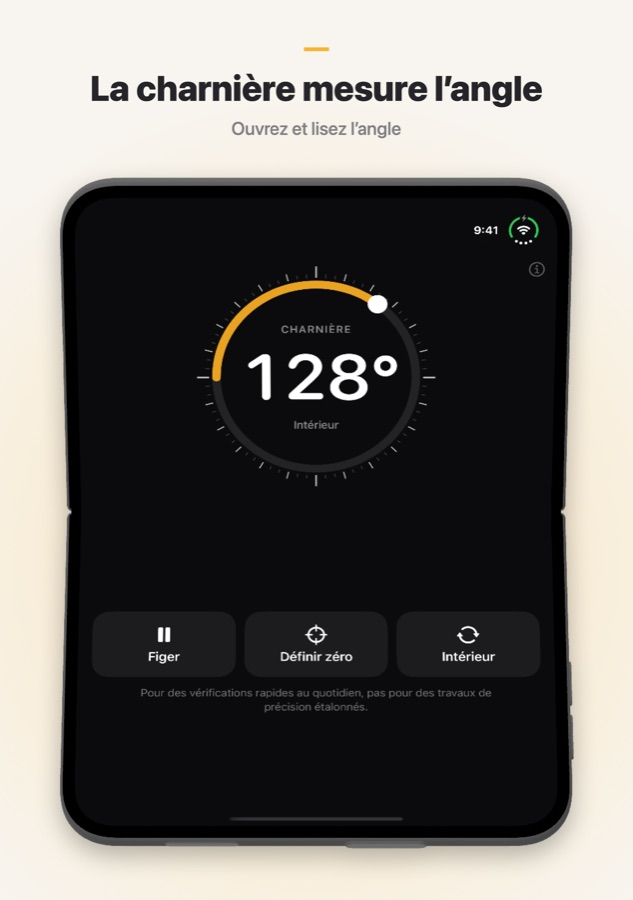
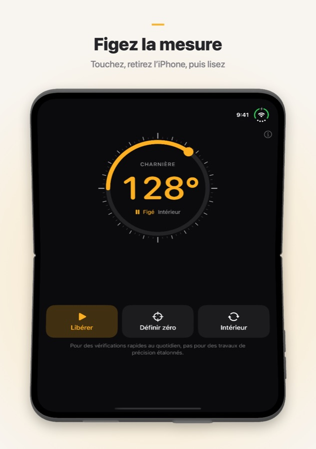
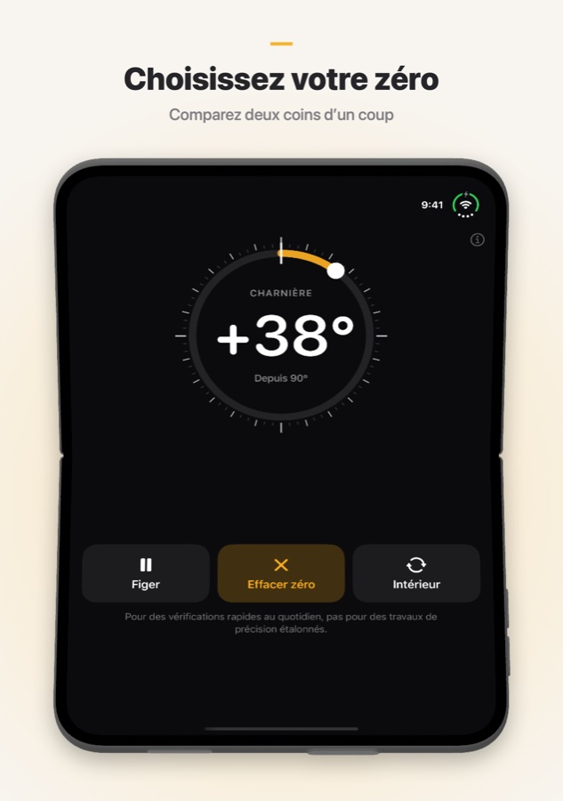

Fold Angle
Votre iPhone pliable sait déjà de combien il est ouvert. Fold Angle transforme sa charnière en rapporteur : placez l’iPhone dans un coin, contre une porte ou sur le bord d’une boîte, et lisez l’angle entre les deux moitiés. Sur les autres iPhone et iPad, l’app fonctionne comme inclinomètre.
Nécessite iOS 17 ou version ultérieure.
Téléchargement

Assistance
Une question, un bug ou besoin d’aide avec l’app ? Écrivez-nous. Nous lisons chaque message.
Questions fréquentes
- Sur quels appareils fonctionne-t-elle ?
Fold Angle est conçue pour l’iPhone Duo, où elle lit directement l’angle de la charnière. Sur les autres iPhone et iPad, elle fonctionne comme inclinomètre : elle indique, grâce aux capteurs de mouvement, de combien l’appareil s’écarte de l’horizontale. - Comment garder une mesure ?
Touchez Figer pour bloquer le nombre, puis retirez l’iPhone et lisez-le. Touchez Libérer pour revenir à la mesure en direct. Vous pouvez aussi toucher deux fois le nombre. - À quoi sert « Définir zéro » ?
L’angle actuel devient le nouveau zéro, pour comparer deux coins ou mesurer l’ouverture d’une porte. Touchez Effacer zéro pour revenir aux angles absolus. - Que signifient « Intérieur » et « Extérieur » ?
Intérieur est l’angle entre les deux écrans, Extérieur l’angle au dos du pli (360° moins l’intérieur). Touchez le bouton pour basculer. - Posée à plat, l’app affiche environ 2° au lieu de 0°.
En mode inclinaison, le bloc photo soulève un côté de l’iPhone. Touchez d’abord Définir zéro sur la surface plane puis mesurez, ou posez l’iPhone sur son écran. - Je ne sens pas les vibrations.
Fold Angle vibre légèrement tous les 15° et plus franchement à 90° pile. Si vous ne sentez rien, vérifiez que Réglages → Sons et vibrations → Vibrations du système est activé. - Quelle est sa précision ?
Elle est faite pour des vérifications rapides au quotidien, pas pour des travaux de précision étalonnés. Quand l’exactitude compte, vérifiez avec un vrai rapporteur ou un niveau. - Collecte-t-elle mes données ?
Non. Fold Angle n’a ni compte ni serveur et n’effectue aucune requête réseau. Les mesures des capteurs restent sur votre appareil.
Captures d’écran



Mentions légales
Politique de confidentialité
Dernière mise à jour : octobre 2026
Introduction
Fold Angle repose sur un principe simple : vos données vous appartiennent. Cette politique de confidentialité explique à quelles informations l’app accède et comment elles sont traitées. En bref, nous n’en recevons aucune.
Capteurs
Fold Angle lit l’angle de la charnière (sur iPhone Duo) et les capteurs de mouvement (sur les autres appareils) uniquement pour afficher l’angle à l’écran. Ces mesures sont traitées sur votre appareil et ne sont jamais enregistrées, envoyées ni partagées.
Aucune collecte de données
Nous ne collectons, ne stockons, ne suivons ni ne traitons aucune information personnelle. L’app ne nécessite ni compte ni inscription.
Aucune connexion Internet
Fold Angle fonctionne entièrement hors ligne. L’app n’effectue aucune requête réseau.
Achats
Les achats sont entièrement gérés par Apple via l’App Store. Nous ne recevons jamais votre identifiant Apple, votre moyen de paiement ni aucune autre information de paiement.
Services tiers
Fold Angle n’utilise aucun service tiers d’analyse, de publicité ou de suivi. Aucune donnée n’est partagée avec des tiers.
Confidentialité des enfants
Comme aucune donnée personnelle n’est collectée, Fold Angle est conforme à la loi COPPA (Children's Online Privacy Protection Act) et aux réglementations similaires dans le monde.
Modifications de cette politique
Nous pouvons mettre à jour cette politique de confidentialité de temps à autre. Les modifications prennent effet dès leur publication. Nous vous invitons à consulter cette page régulièrement.
Nous contacter
Pour toute question sur cette politique de confidentialité, contactez-nous à : support [at] hoshinosoftware [dot] com
Conditions d’utilisation
Dernière mise à jour : octobre 2026
Acceptation des conditions
En téléchargeant ou en utilisant Fold Angle, vous acceptez d’être lié par les présentes conditions d’utilisation. Si vous ne les acceptez pas, veuillez ne pas utiliser l’app.
Licence
Hoshino Software vous accorde une licence personnelle, non transférable et non exclusive pour utiliser Fold Angle sur vos appareils Apple conformément aux présentes conditions et aux conditions d’utilisation de l’App Store d’Apple.
Utilisation autorisée
Vous ne pouvez utiliser Fold Angle qu’à des fins légales. Vous vous engagez à ne pas utiliser l’app d’une manière contraire aux lois ou réglementations applicables.
Pas un instrument de précision
Fold Angle est destinée aux vérifications rapides du quotidien. Les mesures dépendent des capteurs de votre appareil et peuvent s’écarter d’un degré ou plus. Ne vous y fiez pas lorsqu’une erreur pourrait causer un préjudice, des dommages ou une perte.
Absence de garantie
Fold Angle est fournie « en l’état », sans garantie d’aucune sorte, expresse ou implicite. Nous ne garantissons pas que l’app soit exempte d’erreurs, ininterrompue ou adaptée à un usage particulier.
Limitation de responsabilité
Dans toute la mesure permise par la loi applicable, Hoshino Software ne pourra être tenue responsable de dommages directs, indirects, accessoires, spéciaux ou consécutifs résultant de l’utilisation ou de l’impossibilité d’utiliser Fold Angle.
Modifications des présentes conditions
Nous pouvons mettre à jour les présentes conditions d’utilisation de temps à autre. Continuer à utiliser l’app après la publication des modifications vaut acceptation des conditions révisées.
Droit applicable
Les présentes conditions sont régies par les lois de la juridiction dans laquelle Hoshino Software exerce ses activités.
Nous contacter
Pour toute question sur les présentes conditions d’utilisation, contactez-nous à : support [at] hoshinosoftware [dot] com